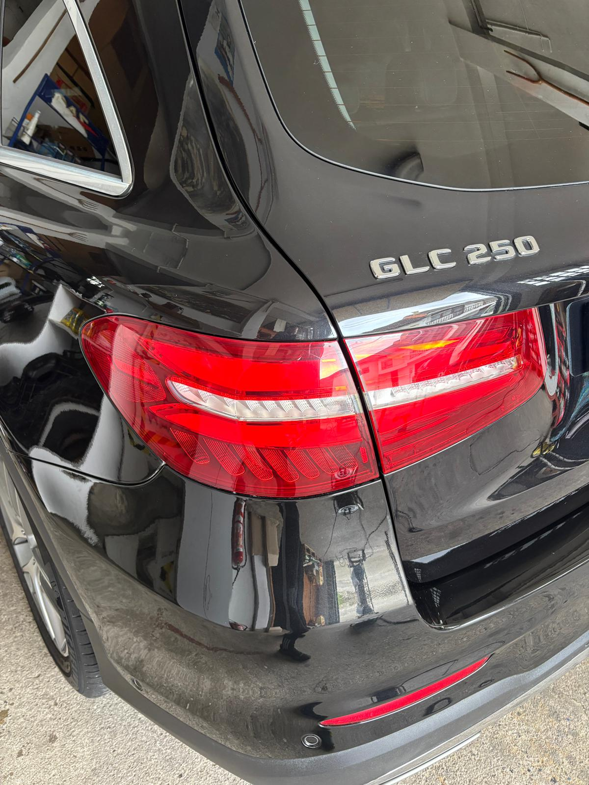
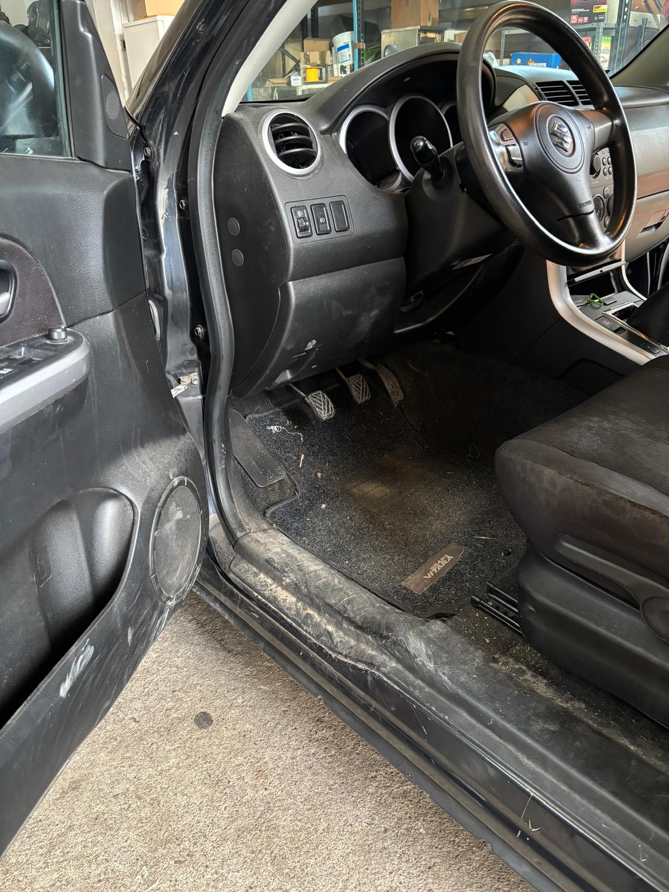
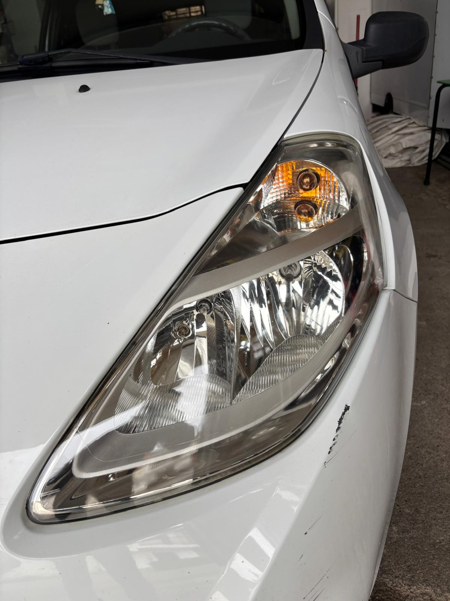
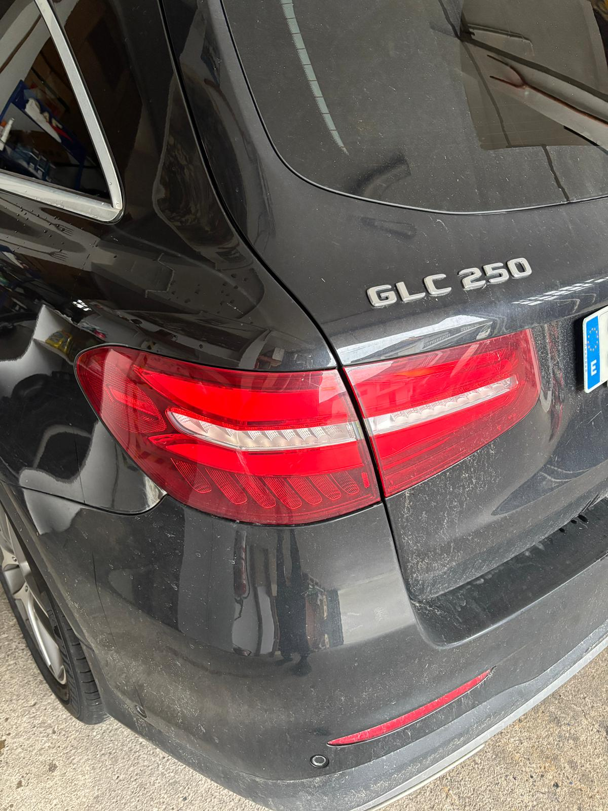
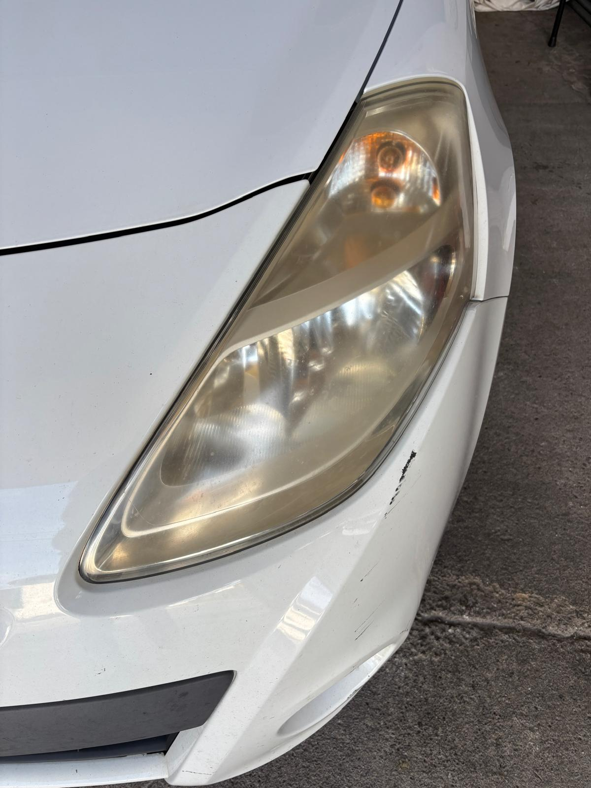

Limpieza interior
Aspirado, limpieza de superficies y tratamientos interiores según el estado del vehículo.
Desde 60 €Ver servicio ↗
Cuidamos tu vehículo con atención, productos profesionales y un trabajo minucioso para que vuelva a lucir como merece.
Desde una limpieza de mantenimiento hasta una puesta a punto integral. Elige el servicio que mejor se adapta a tu coche.
Aspirado, limpieza de superficies y tratamientos interiores según el estado del vehículo.

Limpieza y cuidado exterior para recuperar el aspecto y el acabado de tu vehículo.
Un servicio combinado de interior y exterior para un resultado completo.

Tratamiento específico para asientos y tejidos con manchas y suciedad acumulada.

Restauración de faros deteriorados para mejorar su transparencia y aspecto.
Eliminación de olores, mantenimiento y servicios específicos. Consúltanos tu caso.
Precios orientativos sujetos al tamaño y estado del vehículo. El presupuesto se confirma antes del servicio.
Imágenes reales de servicios realizados por LCM Lavado & Detailing.


En LCM Lavado & Detailing trabajamos con cita previa para dedicar a cada vehículo el tiempo y la atención que necesita. Te asesoramos sobre el servicio más adecuado y te explicamos el presupuesto antes de comenzar.
Estamos en Ampuero, Cantabria, y atendemos a clientes de la zona y alrededores.
Ver perfil y reseñas en Google ↗Elige el servicio y consulta los horarios disponibles. ¿Tienes dudas? Escríbenos.